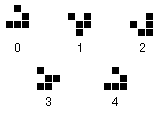

There are few topics in computer science that are as diversely applicable and as actively explored as cellular automata. Much of the research going on in computer science today finds some basis in cellular automata or utilizes cellular automata in some fashion. It has turned up in artificial life, image processing, distributed computing, and encryption, to name a few. In fact, it doesn't stop at computer science; cellular automata have been used to model population growth, urban development, energy diffusion in a gas, decentralized goal-oriented behavior, and an enormous list of other things that I don't care to enumerate.
Now that you're sufficiently intrigued by the topic, I'll proceed to give you just enough background on cellular automata to get yourself in trouble at parties1. First, a definition2 suitably detailed to allow the article to make sense and suitably vague so as to annoy the mathematicians:
A CA 3is characterized by a set of cells and a set of rules. The cells are commonly, but not necessarily (as we'll see later) organized into a two-dimensional grid extending infinitely in both directions. The cells have characteristics or states, generally something along the lines of on/off or a numerical value.
A generation is one particular set of cell states. The rules describe how to generate the next generation given the current generation. They are usually something along the lines of "if a cell has exactly three neighbors in state 1 and it is in state 0, it's new state is 1." The rules are applied to each cell in the grid5 and the result is the next generation.
As has probably already occurred to you, this is a very open ended description. The cell states can be extremely complex, as can the rule sets. What will become increasingly apparent6 by the end of the article is that CAs are a different approach to computing, one that lends itself very well to some problems that are difficult to solve with conventional computing techniques.
Machine copy machine
In the late 1940's a mathematician by the name of John von Neumann7
began to develop the ideas that would eventually flourish8 into
the theory of cellular automata. His interests varied from game theory9 to
self-reproducing machines. The latter is what led him to develop cellular
automata.
Building an actual machine that, in turn, built a copy of itself is no small task even today. It comes as no surprise that fifty years ago, von Neumann opted to develop10 a mathematical world in which machine copying machines could operate.
He devised a cellular automaton that consisted of an infinite two-dimensional grid of cells that could take on any of 29 states and a large number of transition rules. His reproducing machine consisted of a rectangular organization of cells followed by an extremely long tail. Within the rectangular part of the machine, there existed a number of suborganisms. The factory suborganism arranged materials from the environment, the duplicator suborganism read a series of instructions and copied them and a computer orchestrated the whole process. All in all, it is very Turing-machine-esque11.
It is interesting to reflect on the concepts of modularity and reusability in light of the fact that von Neumann's self-reproducing program consisted of over two hundred thousand cells arranged on a grid, each containing one of 29 values. Perhaps the concept of code readability had yet to be invented. Another interesting side note is that von Neumann's self-reproducing machine has many parallels to the little self-reproducing machines in each and every cell of your body. Many of the cellular organelles are represented in von Neumann's machine, and 150,000 of those 200,000 cells are his equivalent of DNA.
Who says life isn't a game?
Our next stop on the historical tour of CAs leads us to the realm of one John Conway12 and a little closer to the world of computing as it
is today. Conway posited that a rule set substantially smaller than the one
von Neumann developed could satisfy Turing's requirements for computational
capability and hence support a self-replicating machine13.
To that end, in 1970 Conway developed14 the game of life. Life is a cellular automaton operating on a two-dimensional grid of cells each of which can have only two states: dead or alive. The rules for Life are also very simple:
These very simple rules can lead to extremely complex behavior given the right arrangement of live cells. Conway experimented with this game a great deal himself and following the publication of an article by Martin Gardner in Scientific American15 the rest of the world got in on the fun.
Soon, a whole host of interesting creatures was discovered and investigated. A very important one, known as the glider, is a configuration of cells that manages
|
5 iterations in the life of a glider |
|  |
| Figure 1. |
Various organisms in life exhibit interesting properties, and while I can only scratch the surface of what is possible, other people have put together voluminous archives of patterns. To get a feel for how the game operates, take a look at some still life17 patterns as well as some of the more common blinkers18.
Subsequent discoveries include logical AND and OR gates and even an entire adder that adds values represented by streams of gliders the sum being represented by another stream of gliders. These discoveries certainly confirm Conway's idea that the Life CA was a Turing computer. Little did he know that he was creating something that was just plain fun to watch19.
Controlled anarchy
Thanks to technological progression in the past 25 years, we don't have to
move stones around on a Go board or conspire to develop nuclear weapons in
order to explore CAs. This increase in computer availability has been mirrored
by an explosive growth in research of cellular automata. Research in the field
of artificial life has developed as rapidly, and in the same time frame as the
thorough investigation of CAs. Like chocolate and peanut butter, these two
fields have come together with some very exciting results.
A common characteristic of many biological systems is that of decentralized control. There are no ring masters in nature, no command central. The complex behavior that is observed must be explainable by some other mechanism.. CAs give us the perfect environment for exploring systems with no central control. Given that the rules are executed in parallel on every cell, we can easily explore systems where simple local interaction20 takes place for a large population of cells over some period of time.
A compelling example of this is a model of termite behavior. Termites organize little chips of wood into large piles, but being very small they can't see the big picture of where the piles of chips are, and there are no helicopters above radioing instructions down to the busily working termites. How can they achieve their goal?
It turns out that a simple set of rules allows just such a goal to be achieved. Suppose an initially random distribution of chips on a two-dimensional grid. Along with the chips are some number of termites. These termites wander around randomly until they encounter a chip, when they encounter the chip, they pick it up and continue to wander randomly around until they encounter another chip. They drop the first chip down next to the second chip and wander off looking for another chip.
This can be modeled as a cellular automaton with some simple rules. A cell can contain a wood chip, a termite, neither, or both (we assume two termites won't wander into the same cell). Each iteration, the termite wanders from its current cell to a neighboring cell. If the cell contains a woodchip, it picks it up. If it is carrying a woodchip and it wanders into a woodchip carrying cell, it instead sets the woodchip down in an empty space next to the first woodchip and then exits in some random direction from that cell.
Take a look at this automaton21 in action. The yellow squares are wood chips and the red squares are termites. When the termites pick up a wood chip, they turn blue. When they encounter a second wood chip, they turn green which indicates that they'll set the first chip down in the next empty space that they encounter. After many generations, the wood chips begin to collect into piles, eventually into one large pile. Unfortunately, Java doesn't quite boast the computing power to perform this simulation on a large enough set of termites and chips to truly impress, but the beginnings of the emergent behavior are definitely visible in the applet.
Generation N+1
Examples of CAs used to model flocking
behavior, molecular interaction
in a gas, and even forest
fires can be seen on the Net. It seems that there is no end to the
applicability of cellular automata to new and different problems that arise in
the sciences. Before I go, allow me to point you to three really good places
to get all the meaty details that I left out of this article.
Bon appetit!

-- Michael <mdb@go2net.com> recently realized that he is merely a complex automaton himself and is now busily counting his states and transition rules.
Source code to the applets written for this article (in
order of appearance):
DBApplet.java, Life.java, Termite.java